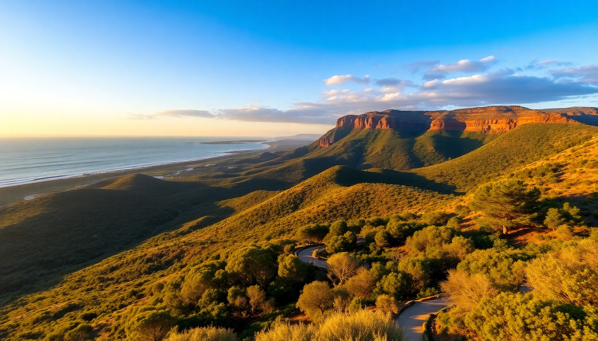

7-Day Australia: Sydney, Great Ocean Road & Uluru Itinerary

So you’ve got seven days in Australia and want to hit the east coast icons and the Red Centre. It’s tight, but doable if you fly between legs and skip the filler. This itinerary focuses on Sydney’s harbour, the Great Ocean Road’s cliffs, and Uluru’s silence. No fluff—just what worked for me.
How do you get from Sydney to the Great Ocean Road to Uluru in one week?
Fly. You’ll waste days driving between Sydney and Melbourne. I booked a cheap early flight from Sydney to Melbourne (Jetstar or Virgin—both run hourly). From Melbourne, I drove the Great Ocean Road as a day trip, then flew Melbourne to Uluru (Ayers Rock Airport) the next morning. Return flights from Uluru go via Sydney or Alice Springs. I chose an early flight to Sydney to catch my international connection.
Logistics that saved me time:
- Sydney to Melbourne: 1.5-hour flight, not the 9-hour drive.
- Great Ocean Road drive: Left Melbourne at 6 a.m., back by 10 p.m.—long day but worth it.
- Melbourne to Uluru (AYQ): Jetstar direct, 3 hours.
- Uluru to Sydney: Qantas via Alice Springs, 4 hours total with layover.
- Car rental: Picked up at Melbourne Airport, dropped off at the same spot.
What should you do in Sydney with only two days?
I based myself in Darling Harbour for the first night. It’s convenient but a bit touristy—next time I’d stay in Surry Hills for better food and locals. Day one: walked from Circular Quay past the Sydney Opera House to the Royal Botanic Garden for that classic photo of the harbour bridge. Then I took the Manly Ferry from Circular Quay—30 minutes across the water, and Manly’s Cabbage Tree Bay is a solid snorkel spot without crowds.
Highlights and honest notes:
- Bondi to Coogee walk: 6 km of cliffs and ocean pools. Do it early before the selfie crowd arrives.
- The Grounds of Alexandria: Overhyped for brunch. Long line for average eggs. Skip it.
- Chinatown’s BBQ King: Cheap roast duck and rice. No frills, real flavour.
- Sydney Tower Eye: Not worth the ticket. The view from Mrs Macquarie’s Chair is free and better.
Can you really drive the Great Ocean Road in one day from Melbourne?
Yes, if you’re okay with a long day behind the wheel. I left Melbourne at 6 a.m., stopped at Torquay for a coffee (the surf town vibe is real), then hit Bells Beach—empty at 7:30 a.m. The real show starts after Lorne. The road hugs cliffs, and you’ll pull over constantly for lookouts. Twelve Apostles is the main event, but the London Arch and Gibson Steps are quieter and equally dramatic.
Stops I made (and one I skipped):
- Lorne: Quick break for a pie at Lorne Central Bakery—flaky, meaty, perfect.
- Kennett River: Wild koalas in the trees near the carpark. Saw three without trying.
- Great Otway National Park: Detour for Maits Rest rainforest walk (30 minutes, mossy, cool).
- Twelve Apostles: Crowded by noon. Go early or late.
- Loch Ard Gorge: More peaceful than the Apostles, and you can walk down to the beach.
- Port Campbell: Had fish and chips at Waves on the Bay—fresh, not frozen.
- Skipped: London Bridge (same rock formation, less impressive).
Is Uluru worth the flight and cost?
Yes, but only if you understand what you’re paying for. The resort town Yulara is a monopoly—rooms at Desert Gardens Hotel cost $300+ a night, and a basic burger is $25. That said, watching Uluru change colour at sunset is a legit experience. I did the Uluru Base Walk (10 km, flat, takes 3 hours) at sunrise—no crowds, just red dirt and silence. The Field of Light installation felt tacky to me (coloured wires in the desert), but my travel partner loved it.
Practical tips for Uluru:
- Fly into AYQ (Ayers Rock Airport): Direct from Melbourne or Sydney. Don’t fly to Alice Springs and drive—it’s 5 hours of nothing.
- Stay in Yulara: The only option unless you camp. The Lost Camel Hotel is mid-range and clean.
- Sunrise at the Talinguru Nyakunytjaku viewing area: Bring a jacket—it’s cold before dawn even in summer.
- Kings Canyon: Skip if you only have one day. It’s a 3-hour drive from Yulara and similar rock to Uluru.
- Kata Tjuta: The Valley of the Winds walk (7 km) is tougher than Uluru’s base walk but more varied. Do it if you have a second day.
Where should you eat in each city without blowing your budget?
Sydney and Melbourne have world-class food scenes, but you don’t need a $150 tasting menu. In Sydney, Barangaroo House has a rooftop bar with harbour views and decent tacos for $15. In Melbourne, I hit Chin Chin in the CBD—the crowd is loud, but the papaya salad and green curry are consistent. In Uluru, you’re stuck with resort food, but Kulata Academy Cafe inside the cultural centre serves a decent kangaroo pie for $12.
My actual meal stops:
- Sydney: Harry’s Cafe de Wheels in Woolloomooloo for a pea-and-potato pie at midnight.
- Sydney: Mr. Wong for dim sum—shumai and har gow were fresh, but book a week ahead.
- Melbourne: Lune Croissanterie in Fitzroy. The line moves fast. Get the plain butter croissant.
- Melbourne: Queen Victoria Market for a borek from The Borek Shop—flaky, spinach-and-feta, $8.
- Uluru: Bough House Restaurant at the Outback Pioneer Lodge for a buffet. It’s fine. Not great.
FAQ
Is seven days enough for Sydney, the Great Ocean Road, and Uluru? It’s enough if you fly between every leg and don’t add extra stops. You’ll have two full days in Sydney, one long day on the Great Ocean Road, and two days in Uluru. You’ll feel rushed, but you’ll see the three big things. If you have more time, add a day in Melbourne for laneway coffee.
Do I need a car for the Great Ocean Road? Yes. Public transport doesn’t reach the Twelve Apostles efficiently. Rent a car from Melbourne Airport—I used Avis and it cost $80 for the day including insurance. Book ahead; they sell out in peak season.
What should I pack for Uluru in winter (June–August)? Days are warm (20°C) but nights drop to 2°C. Bring a fleece jacket, long pants, and a beanie for sunrise/sunset. Sunscreen and a wide-brim hat are non-negotiable—the sun burns even in winter. No need for hiking boots; running shoes work on the base walk.
Conclusion
- Fly between Sydney, Melbourne, and Uluru to save time.
- Stay in Surry Hills (Sydney) or Fitzroy (Melbourne) for better food and fewer tourists.
- Drive the Great Ocean Road as a single long day from Melbourne—start at 6 a.m.
- Skip the Field of Light at Uluru; do the Base Walk at sunrise instead.
- Book all flights and accommodation at least two months ahead for reasonable prices.